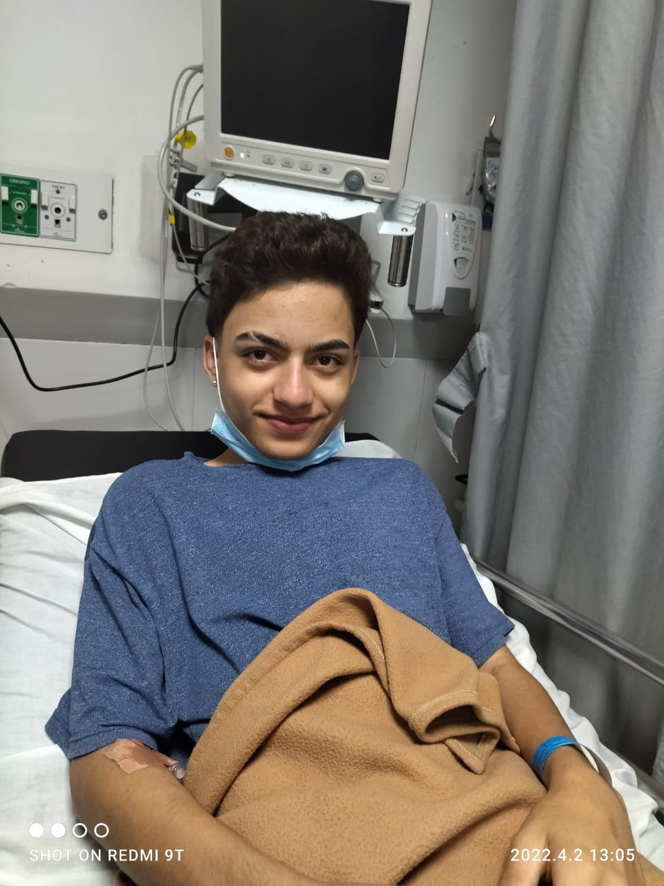
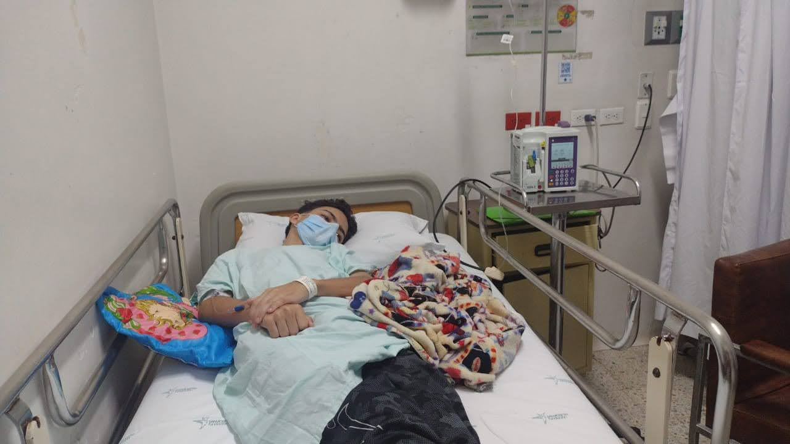
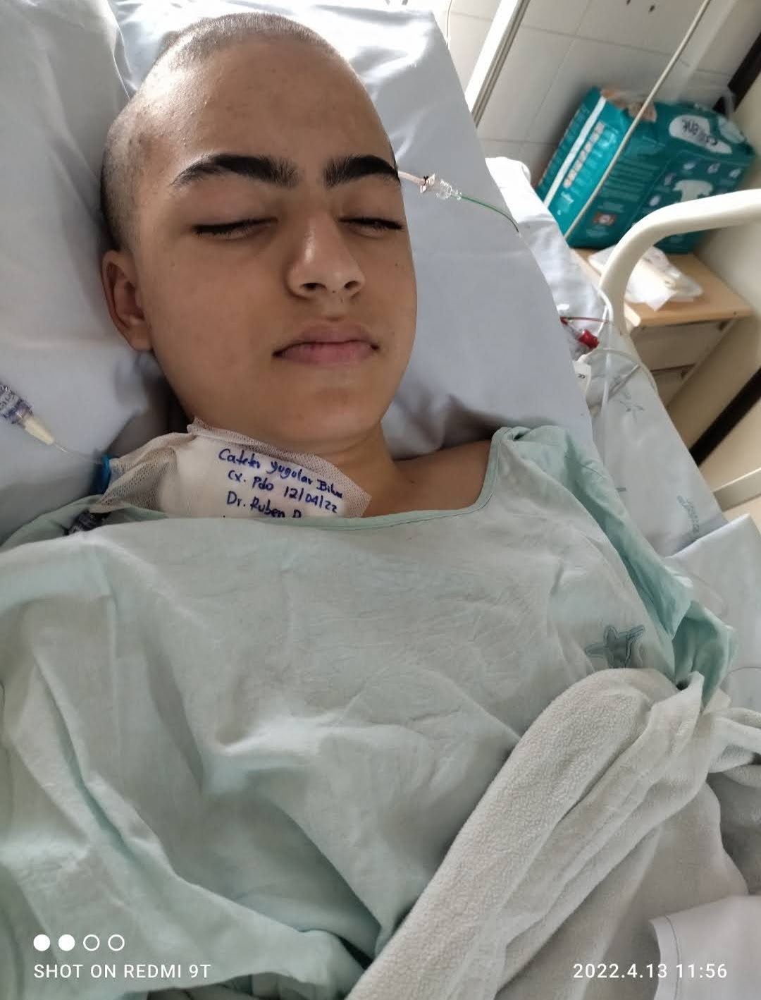
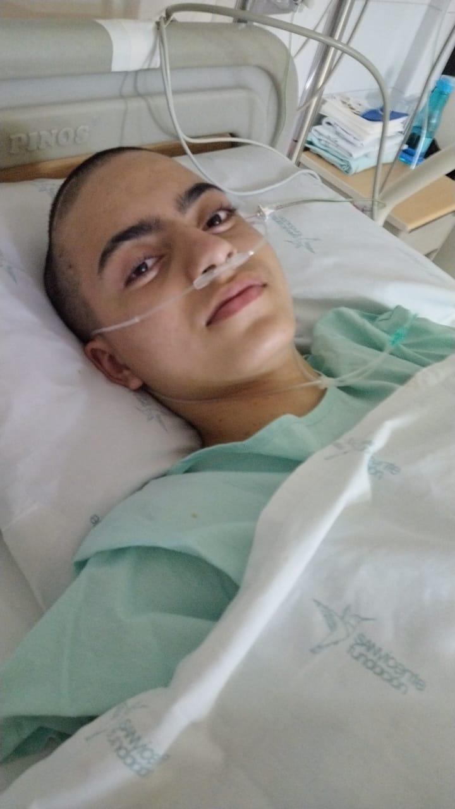
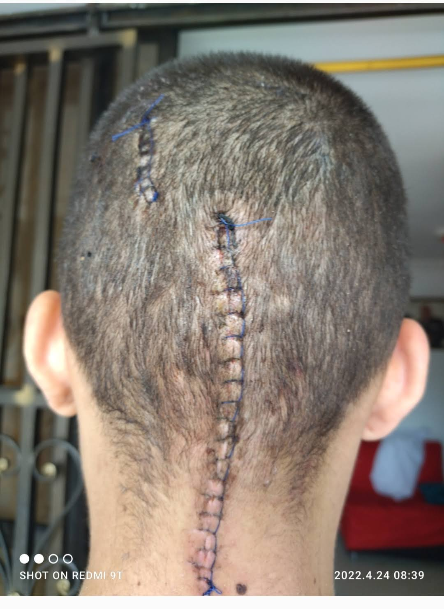
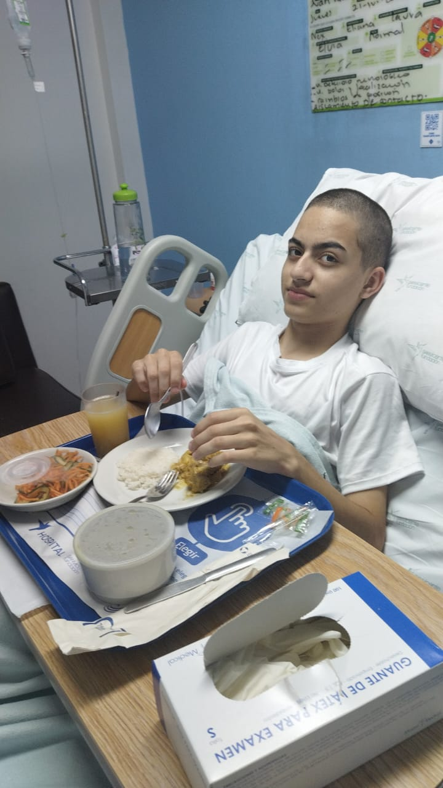
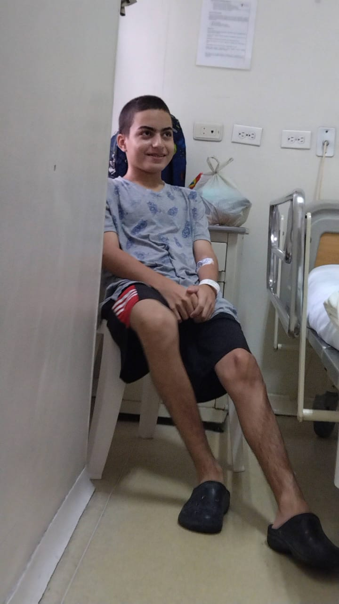
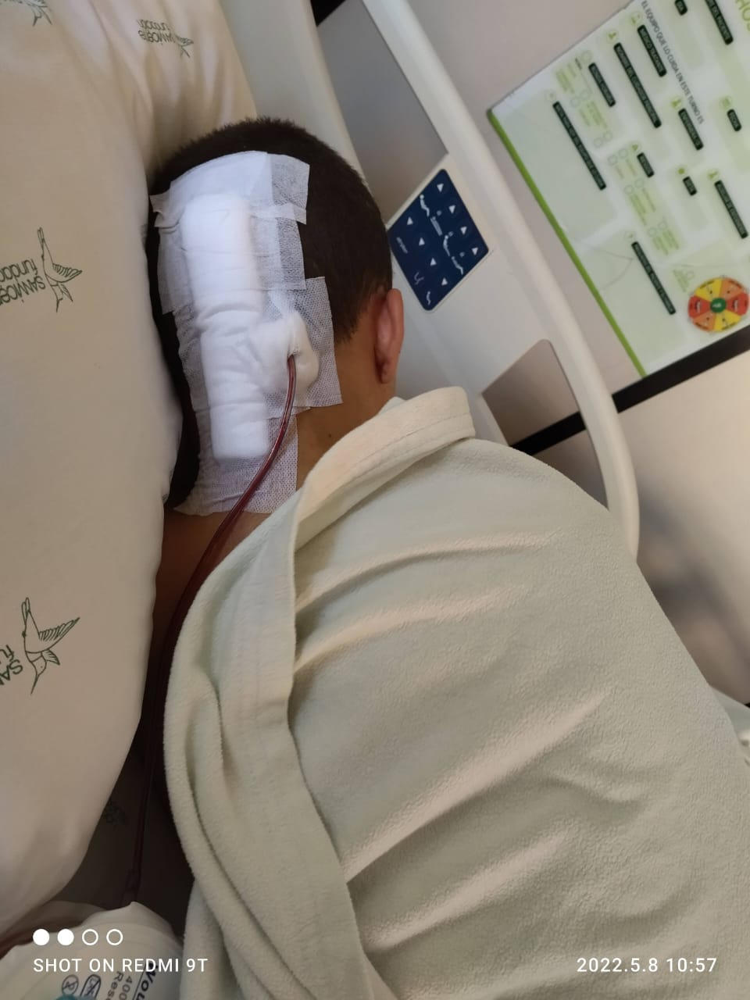
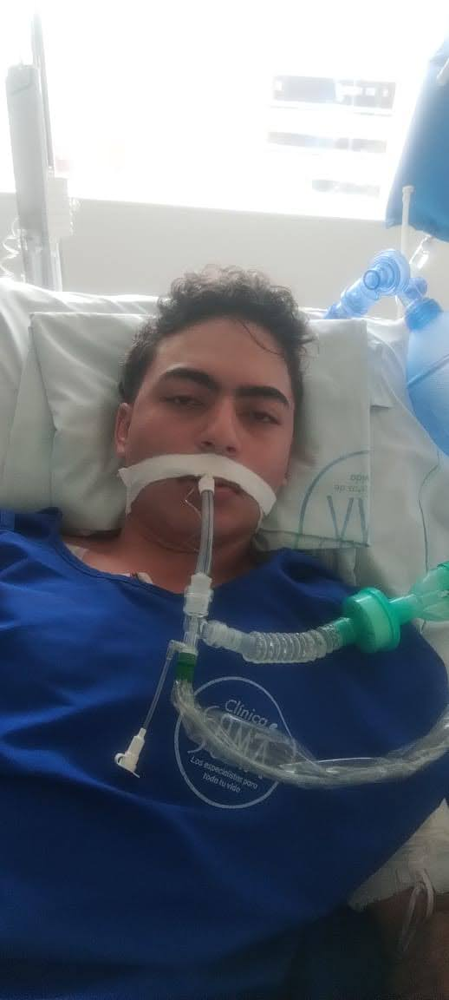

A los quince años escuché a mi mamá decir que tenían que hospitalizarme para operarme. Ella todavía no me lo había contado. Yo ya lo sabía. Esta es mi historia, con lo que dolió y con lo que todavía duele.
También puedes escucharla con los controles de arriba.
Mi historia ↓
Mi historia, en mis palabras
Todo lo que pasó. Todo lo que callé.
No cuento esto para que lo hagan más fácil de escuchar. Lo cuento porque cada parte me pasó y cada parte importa.
A los 15 años · Antes de la primera operación
Yo pensaba que era gastritis
A los 15 años me detectaron un tumor en la médula espinal con cerebelo. Yo no tenía idea de eso. Estaba relativamente aliviado porque pensaba que tenía una enfermedad, pero era de gastritis, algo que no tenía nada que ver con lo de la cabeza.
Un día estaba en mi casa, antes de ir al colegio. Mi mamá llegó y tocó la puerta. Antes de abrir, miré por el ojito. La vi llorando. Quise saber qué tenía y por qué lloraba. En ese momento estaba hablando por teléfono con mi abuela y le decía que yo estaba muy mal, que le habían dicho que me tenían que hospitalizar para operarme.
Me sentí demasiado mal. Abrí la puerta y salí corriendo al baño a bañarme y a ocultar las lágrimas con el agua, porque siempre he sido de no demostrar lo que siento. Pasé un infierno en ese baño, quebrantándome por dentro. Después salí.
Mi mamá me dijo: “Juan, empaca ropa como para un mes, que nos vamos a vivir un tiempo donde su abuela”.
Ella quería ocultarme todo, pero yo ya lo sabía. Le hice caso, empacé ropa y nos fuimos en taxi “donde mi mamita”. Llegamos a la clínica y me metieron por urgencias. No se demoraron prácticamente nada, aunque el hospital estaba colapsado. Unas horas después me dieron habitación. Desde ahí empezó mi nueva vida, llena de cosas malas y malos ratos.

Mi primer día en el hospitalTenía 15 años. Este fue mi primer día en el hospital.

¿Por qué a mí?El mismo día que me ingresaron. Me preguntaba por qué me estaba pasando a mí.
Hospital · Los primeros días
Mi mamá trataba de maquillar todo
Los especialistas me visitaban a cada rato para decirme lo que tenía. Mi mamá se esmeraba en maquillar todo para que yo no me sintiera mal. Yo ya sabía lo que estaba pasando, pero siempre me mostré tranquilo para que mi familia no se preocupara.
Además del tumor, tenía hidrocefalia. Como a la semana de estar hospitalizado llegó la primera cirugía. Yo estaba asustado, pero tranquilo porque fue algo sencillo, o eso parecía. Si no estoy mal, no duró más de dos horas. Me trataron la hidrocefalia. Todo estaba bien; obviamente tenía dolor porque fue en la cabeza, pero fue algo suave.
Me tranquilicé pensando que ya casi acababa todo y que eso no me estaba doliendo tanto. Me tuvieron todo el tiempo en el hospital controlándome. Como a los quince días, cuando me había mejorado un poco de esa cirugía, empezaron a llegar más doctores a explicarme bien qué estaba pasando, qué riesgos tenía la cirugía que venía, cuánto se iba a demorar más o menos y quiénes iban a estar.

La segunda cirugía, la más riesgosaAquí todavía estaba dormido. Esta fue la segunda cirugía, la más riesgosa.
La cirugía más importante de mi vida
Ocho cirujanos
Me presentaron a cada persona que estaría ese día en el quirófano. Me dio muy duro. Aun así, nunca mostré miedo; una que otra vez lloré, pero cuando mi familia no me estaba viendo.
El día antes de la cirugía, como a las cuatro de la mañana, me trasladaron a cuidados intensivos para prepararme, ponerme la sonda y dejarme listo para el otro día. A las seis de la mañana me levantaron, me bañaron y me organizaron. Recuerdo que mi familia no estaba ahí porque no podían entrar. La cirugía estaba programada para las siete.
A las 6:40 iba de camino al quirófano. A las 6:50 llegamos y entraron mi mamá y mi papá. Me desbasté y empecé a llorar como loco, porque fue como una despedida. Fue muy duro para mí, pero a la vez tranquilizante porque pude estar con ellos.
A las siete me metieron al quirófano. Hablé con cada uno de los ocho cirujanos que iban a hacer el procedimiento. Me despedí de ellos y les dije que, pasara lo que pasara, ellos no tenían la culpa. Después me durmieron.
Duró 18 horas. No sentí nada, no soñé, no supe qué pasaba. Cuando desperté, me sentía demasiado mal y raro, muy extraño.
No pudieron retirarme todo el tumor porque estaba muy adherido. Si me lo retiraban, había altos riesgos de muerte o de quedar cuadripléjico. Hasta ahí iban dos cirugías: la de la hidrocefalia y la del tumor.

Una semana despuésEsta foto es de más o menos una semana después de la cirugía más dura.

La cicatriz de la segunda cirugíaEsta fue después de la segunda cirugía. Todavía estaba dormido.
Después de las 18 horas · UCI y recuperación
Volver a caminar fue como aprender de nuevo
Estuve aproximadamente quince días en UCI después de la cirugía más riesgosa. Tenía mucho dolor y no podía moverme porque no tenía fuerzas. Quedé viendo borroso por tres días; después me quedaron manchas en la vista y eso me perjudicó demasiado.
Al salir de UCI me pasaron a cuidados especiales. Allí volví a caminar después de unos veinte días. Fue mágico, pero con mucho dolor, como aprender de nuevo. Luego me pasaron a habitación y después me fui para la casa.
Siempre estuve con mis papás. Mi papá se quedaba de 7 p. m. a 7 a. m. y después se iba a trabajar. Le tocó demasiado duro: siempre estaba en una silla de plástico, nunca en algo más cómodo, y aun así se iba a trabajar sin falta. Durante el día mi mamá estaba conmigo; después se iba donde mi abuela a organizarse y pasar la noche.

Mis primeros pasosCuando me pasaron a cuidados especiales, di mis primeros pasos.

Me dijeron que iba a salirCuando me dijeron que iba a salir, no podía ocultar la alegría.
De vuelta en casa · La herida se abrió
“Usted no puede decidir por mí”
Después de salir del hospital, como a los veinte días, me levanté demasiado mal. Lo primero que sentí fue un dolor muy maluco en la cabeza. La almohada estaba demasiado mojada, como si me hubieran tirado un baldado de agua. Se había abierto una parte de la cicatriz y salía agua por ahí.
Me fui para el hospital con la cabeza hacia abajo, porque si miraba al frente me salía agua por la cicatriz. Al llegar me hicieron esperar como tres horas sentado. Mi mamá pidió que me ayudaran y que me dejaran hospitalizado porque le daba miedo que hubiera un problema. El doctor dijo: “Usted no puede decidir por mí. Yo soy el doctor y lo voy a mandar para la casa”.
Nos fuimos a la casa. En el hospital me habían puesto una gasa que había que cambiar porque salía mucha agua. Como a las siete de la noche me iba a acostar cuando me dio un dolor de cabeza demasiado, demasiado doloroso. Me llevaron muy rápido en taxi. Al llegar al hospital me hospitalizaron, aunque el doctor decía que yo no tenía nada porque él lo decía.
Ese mismo día, si no estoy mal, me metieron a cirugía otra vez. En ese mismo hospital me pegaron una bacteria. Tenía la cabeza toda inflamada de tanta materia que tenía. Otra vez para el quirófano, y me dejaron como veinte días más hospitalizado. Después me fui para la casa con miedo de que volviera a pasar. Por suerte, nunca volvió a pasar.

La cirugía de limpiezaEsta es la cirugía para limpiar la infección de la bacteria.
Los años siguientes · El colegio y el dolor
“Muerto en vida”
Digo que estoy muerto en vida porque tengo un dolor 24/7 que no se calma con nada. Los controles con el doctor son muy de vez en cuando; me tienen muy descuidado. Viví así por tres años más y me gradué del colegio durante ese tiempo.
Como al año de graduarme, más o menos, el tumor volvió a crecer. Fue una noticia que me dejó demasiado mal. Desde ahí siempre he venido con ganas de terminar con mi vida. Por mucho tiempo me lo guardé.
2 de enero de 2026 · Otra operación
Tuve que poner una tutela
Me operaron de nuevo el 2 de enero de este año, 2026. Me operaron porque tocó montar una tutela. El doctor me dijo que me tenía que operar y desde ahí me descuidaron. Después de la operación estuve en UCI poco tiempo, como tres días, y en general como dos días. La verdad, no soporté más en ese hospital. Sentía que me estaba enloqueciendo.
Pensé una cantidad absurda de veces en terminar con mi vida y tuve muchas oportunidades. Esa cirugía me tenía demasiado mal. Recuerdo que fue demasiado dolorosa y, como siempre, en el hospital estaban tranquilos.
Al salir, el doctor me dijo que me llamaba para una cita de control una semana después. Nos quedamos esperando, escribimos y llamamos. Siempre nos dijeron: “No nos llamen ni vengan, que el doctor les dice cuándo sea la cita”. También me dijo que me retiraba los puntos a los quince días y que del hospital me llamaban. Nunca me llamaron.
Pasaron veinte días. Yo tenía una cita con un neurocirujano que me trata la columna porque la tengo desviada por unas hernias. Ese doctor me dijo: “Vaya, que yo lo conozco a él y ya lo voy a llamar. Usted no puede estar un día más con esos puntos”. Fui para allá y me hice afuera de la puerta. Esperé como una hora. Él me dio un papel para que me los retiraran en enfermería. Fui, esperé como tres horas porque había mucha gente y luego me los quitaron.
También me dolió horrible. Sentí que los puntos ya eran parte de mi piel. Desde entonces tengo dolor de cabeza todo el día. Mi cuerpo se acostumbró a todos los medicamentos para el dolor y nada me hace efecto. Me toca vivir con este dolor, con el dolor de la columna, con la visión reducida y con muchas secuelas que dejó todo esto.

La última cirugía · 2 de enero de 2026Esta foto tiene una historia. Fue un poco después de despertar. Mi mamá fue a verme; yo seguía intubado. No sé por qué lo hice, pero le arrebaté el celular, me tomé una foto y entré al grupo de WhatsApp de la familia. Hice una videollamada para verlos, me puse a llorar y le entregué el celular a mi mamá.
Lo que llevo conmigo
Yo ya sabía, pero tenía que aparentar tranquilidad
Cuando era pequeño fuimos varias veces por un dolor de cabeza y durante varios años me dijeron que era “migraña”. Ahora vivo con dolor diario, la columna desviada por hernias, la visión reducida y otras secuelas. A veces siento que desde niño no escucharon a tiempo lo que me estaba pasando.
Mi familia también pasó por todo esto. Yo intentaba que no se preocuparan; ellos intentaban que yo no sufriera. Muchas veces lloré a escondidas. Muchas veces sentí miedo y no lo mostré. Y muchas veces tuve que aguantar dolor mientras esperábamos que alguien nos atendiera.
Esta historia no tiene un final perfecto. El dolor sigue. La incertidumbre sigue. Pero lo que pasó merece ser contado completo.
“Siempre me mostré tranquilo para que mi familia no se preocupara.”
Eso también fue parte de lo que viví: cargar con el dolor y, al mismo tiempo, intentar proteger a los demás de verlo.
Créditos Esta historia es mía. La hice en mis tiempos libres acá en la universidad. Tengo muchas ganas de salir adelante, aunque siento que cada vez voy peor en mi salud mental. He llegado a comprar algo para hacerme daño y terminar con todo esto; lo digo porque ya no quiero ocultar lo mal que me siento.
“La depresión avisa. A veces la señal no es una palabra: es alguien que lleva demasiado tiempo intentando que nadie note cuánto le duele.”
✦
Gracias por escuchar hasta el final.
Si esta historia te removió algo y tú también estás pensando en hacerte daño, no te quedes solo con eso. En Colombia puedes llamar a la Línea 106 para apoyo emocional. Si el peligro es inmediato, llama al 123 o ve a urgencias acompañado de alguien de confianza.
Mi queja · Salud en Colombia
También quiero decir esto en voz alta
La salud de este país es lo peor. Fuimos por dolores de cabeza durante años y me dijeron que era “migraña”. Después, cuando necesitaba atención y seguimiento, mi familia y yo tuvimos que insistir, llamar, escribir, esperar horas y hasta poner una tutela para que me operaran. Tras la cirugía nos dijeron que no llamáramos ni fuéramos, que el doctor avisaría; nunca llamaron. Tuve que buscar a otro médico para que me ayudara a retirar los puntos.
Esta es mi experiencia. No debería tocarle a un paciente con dolor y a su familia perseguir respuestas, atención y controles cuando más los necesitan. Yo sigo con dolor 24/7, con la visión reducida y con secuelas. Quiero que se sepa lo que viví y cómo me sentí tratado.